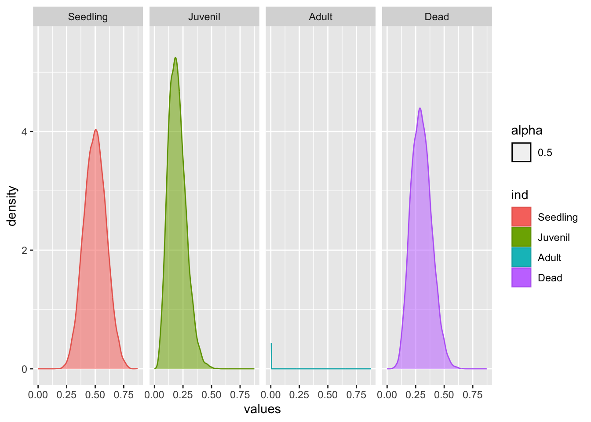

Chapter 21 Impactos de datos sin sentido sobre los analisis de dinamica poblacional
Por: Raymond L. Tremblay
El valor de los estudios cientificos es que los datos representa una visión suficiente cerca a la realidad. El objetivo es tener una apreciación de los parametros más importante para definir un cierto patrón o interacciones. Por concequencia la base de todo estudios is based on the fundamewntal units of data collection. If the data do not represent the reality of the study then the interperettion of the analysis is likely to be erroneous. Fancy mathematics and analyses will NOT result in better or more realistic interpretation if the data is erroneous.
In this section we will consider different aspects of population projection matrix analises and different aspects of the data collection or analysis which are problematic. For each of the problematic situation I will show an example and how it impacts the results and analyses. These “Impacts” are not meant to be inclusive of all possible results of non-sensical data, but an example of not considering these issues and how it may warp the intepretations. Thus a warning to all population biologist to be weary of these issues.
21.1 Small sample size or rare events
Without a doubt the main topic for the use of PPM has been to evaluate population projection of rare or endangered species (other questions are cological or evolutionary) (ref). Consequently, sample size of the study or some of the life stages/ages are reduced. These reduced sample size cause parameter estimates and often non-sensical results.
21.1.1 No Mortality/Perfect survivorship
Consider a species were data is collected and the transition matrix (Sp1matU) is as follows and fertility matriz is (Sp1matF). Note that none of the individuals died in the adult stage (perfect survivorship). Consiquently, the population size never decreases or increases after a time period. Under ALL biologically realistic modelling we would expect populaiton size to sdtart decreasing if a population has no receuitment.
library(DiagrammeR)
Sp1matU <- rbind(
c(0.0, 0.0, 0.0),
c(0.5, 0.3, 0.0),
c(0.0, 0.4, 1.0)
) # transition matrix
Sp1matF <- rbind(
c(0.0, 0.0, 1.0),
c(0.0, 0.0, 0.0),
c(0.0, 0.0, 0.0)
) # fertility matrix
Sp1matA = Sp1matU+Sp1matF # TF matrix
library(Rage)
stages <- c("plantula", "juvenil", "adulto")
plot_life_cycle(Sp1matU, stages=stages, fontsize = 0)Thus if we analize this matrix we assume that none of the individuals in the adult stage die, at any time period!!!. Clearly this is not realistic. For any species the likelyhood of death at any stage is never zero (although is could very small) and thus our matrix is non-sensicle. Consider a tree species, such a Sequoia, it is the likely for large trees of this species it is likely to that survivorship is very high, however never 100%.
In the following script we show that population changes after 5 -6 periods reminds close to one and does not change eventhough we have not recruits (we use the transition matrix without fertility). If there are no recruits (fertility matrix) population size should reduce with time.
## Welcome to popdemo! This is version 1.3-0
## Use ?popdemo for an intro, or browseVignettes('popdemo') for vignettes
## Citation for popdemo is here: doi.org/10.1111/j.2041-210X.2012.00222.x
## Development and legacy versions are here: github.com/iainmstott/popdemo## [,1] [,2]
## [1,] 0.9999999 1
## [2,] 0.9999999 1
## [3,] 0.9999999 1## [1] 0.7333333 0.8909091 0.9632653 0.9885593 0.9965281 0.9989548 0.9996861
## [8] 0.9999058 0.9999717 0.9999915 0.9999975 0.9999992 0.9999998 0.9999999
## [15] 1.0000000 1.0000000 1.0000000 1.0000000 1.000000021.1.1.1 Assume a small change in mortality
Note that in this new model although surviviroship is very close to zero (0.995), and consequently population decline in every time period (even if only by a small fraction) is possible.
Sp1matU_2 <- rbind(
c(0.0, 0.0, 0.0),
c(0.5, 0.3, 0.0),
c(0.0, 0.4, 0.995)
) # transition matrix
Sp1matF <- rbind(
c(0.0, 0.0, 1.0),
c(0.0, 0.0, 0.0),
c(0.0, 0.0, 0.0)
) # fertility matrix
Sp1matA_2=Sp1matU_2+Sp1matF
pop.projection(Sp1matU_2, n=n)$pop.changes## [1] 0.7316667 0.8874829 0.9586555 0.9836264 0.9915311 0.9939504 0.9946832
## [8] 0.9949045 0.9949712 0.9949913 0.9949974 0.9949992 0.9949998 0.9949999
## [15] 0.9950000 0.9950000 0.9950000 0.9950000 0.995000021.1.2 Irreducibility: No Transitions between stages
In the present scenario, juveniles do not grow to become adults, all juveniles either remain juveniles or die. Note the life cycle figure where no arrows connect juveniles to adults.
library(DiagrammeR)
Sp1matU_NT <- rbind(
c(0.0, 0.0, 0.0),
c(0.5, 0.7, 0.0),
c(0.0, 0.0, 0.995)
) # transition matrix
Sp1matF <- rbind(
c(0.0, 0.0, 1.0),
c(0.0, 0.0, 0.0),
c(0.0, 0.0, 0.0)
) # fertility matrix
Sp1matA_NT = Sp1matU_NT+Sp1matF # TF matrix
library(Rage)
stages <- c("plantula", "juvenil", "adulto")
plot_life_cycle(Sp1matU_NT, stages=stages, fontsize = 0)As shown by Caswell (2000) and more recently explored by Stott et al. (2010) matrices need to be irreducible. The concept of irreducibility is associated with the life cycle of the species and the matrix includes the transitions from all stages to all other stages. The above life cycle figure is missing two important components in the life history of the species, no juveniles grow to become adults and none of the adults produce seedlings (seeds that grow to seedlings).
An easy way of determining if the matrix is irreducible is to read the follwowing script isIrreducible in the package (popdemo). Note that is this case the result is False for the above matrix.
## [1] FALSE## [1] FALSE## [1] TRUE21.1.3 No survivorship
Complete mortality of one or more stages. It is often observed that survivorship of smaller individuals or the first stage of the life cycle of a species is highly risky, where the likelihood of survbivorship is very low. For example, most seeds do not survive to germinate. This is likely the norm in orchids where seed production is very high (sometimes millions seeds in one seed capsule, i.e Catasetum; ref), but few are shown to germinate (ref). However this is not limited to orchids, in trees the same pattern may be observed, for example in Nothofagus pumilio seedling recruitment was less than 1.5% Torres et al. (2015). NEED EXAMPLE OF NO SEED OR SEEDLING RECRUITMENTS.
As it is well known that seed germination in orchids is less than straightforward and many variables may influence seed germination Rasmussen et al. (2015). …….
In the present life cycle graph, none of the seedling survive or growth to the next stage. Note the first column in the transition matrix all values are zero. The population may have started with many (even thousands) of seedling, but none grew to become a juvenile or remained as seedlings. This results in a matrix that is reducible isIrreducible = FALSE and consequently does not comply with the requirements needed.
library(DiagrammeR)
Sp1matU_NS <- rbind(
c(0.0, 0.0, 0.0),
c(0.0, 0.7, 0.0),
c(0.0, 0.25, 0.995)
) # transition matrix
Sp1matF <- rbind(
c(0.0, 0.0, 1.0),
c(0.0, 0.0, 0.0),
c(0.0, 0.0, 0.0)
) # fertility matrix
Sp1matA_NS = Sp1matU_NS+Sp1matF # TF matrix
library(Rage)
stages <- c("plantula", "juvenil", "adulto")
plot_life_cycle(Sp1matU_NS, stages=stages, fontsize = 0)## [1] FALSE21.3 Fertility estimates and life cycle
The importance of considering how fertility included in the life cycle is extremely important, and if erroneously considered may result in results and interpretation that are non-sensicle. We would show a few example of how these can be included in the life cycle and matrix and result in cause problems.
21.3.1 Incorrect life cycle and fertility stage
Assume you have a species where you model the life cycle as seedling, juvenile and adult. Fertility is measured as the number of seeds produced by an adult (mean number of seeds per adult). After collecting the data calculations it is determined that the mean number of seeds per adult is 11000. If we add this the transition and fertility matrix belowand evaluate the lambda and graph the population growth with the function project we have a lambda of 4.93 and after only 5 time periods the number of adults are above 250,000. Consequently the population growth rate estimeste would be incorrect and misleading.
The error is that the value in the fertility matrix should correspond to the first stage of the matrix, in this case the seedling stage. Thus the top right corner of the fertility matrix should not be the mean number of seeds per plant, but the mean number of seedlings produced by a an adult plant.
library(DiagrammeR)
Sp1matU_Fert <- rbind(
c(0.0, 0.0, 0.0),
c(0.3, 0.7, 0.0),
c(0.0, 0.25, 0.995)
) # transition matrix
Sp1matF <- rbind(
c(0.0, 0.0, 1100.0),
c(0.0, 0.0, 0.0),
c(0.0, 0.0, 0.0)
) # fertility matrix
Sp1matA_Fert = Sp1matU_Fert+Sp1matF # TF matrix
library(Rage)
stages <- c("plantula", "juvenil", "adulto")
lambda(Sp1matA_Fert)## [1] 4.937718## [1] 5 5 5pr <- project(Sp1matA_Fert, vector="n", time=5)
plot(pr) # Note that even after just 5 time periods, the number of adults is larger than 250,000 individuals
If we wish to add a seed stage than we have to include the stage in our model and matrix with a new stage the seed stage, and have an estimate of the number of seeds that germinate and become seddlings. In the case of orchids, this likely to be a difficult estimate to attain because orchids seeds are difficult to follow in nature unless either the seed packet method developped by. or some genetic fingerprinting method was used to determine the provenance of the seeds.
library(DiagrammeR)
Sp1matU_Fert2 <- rbind(
c(0.0, 0.0, 0.0, 0.0),
c(0.0001, 0.0, 0.0, 0.0),
c(0.0, 0.3, 0.7, 0.0),
c(0.0, 0.0, 0.25, 0.995)
) # transition matrix
Sp1matF2 <- rbind(
c(0.0, 0.0, 0.0, 1100.0),
c(0.0, 0.0, 0.0, 0.0),
c(0.0, 0.0, 0.0, 0.0),
c(0.0, 0.0, 0.0, 0.0)
) # fertility matrix
Sp1matA_Fert2 = Sp1matU_Fert2+Sp1matF2 # TF matrix
library(Rage)
stages <- c("semillas", "plantula", "juvenil", "adulto")
plot_life_cycle(Sp1matA_Fert2, stages=stages)## [1] 1.019805# show change in population size
pr <- project(Sp1matA_Fert2, vector="n", time=5)
plot(pr) # Note that now the number of adults did not increase to the level of the previous model
In the above example we have not included a seed dormancy stage. In many plant species, seeds can be dormant for one or more years. It is not known if seeds in orchids are dormant for a long time Gale et al. (2010) except for a few species which have shown that seeds are still alive after mutliple years in the soil using tetrazolium stain test Rasmussen and Whigham (1993) and Whigham et al. (2006).
21.4 Data Analysis issues
21.4.1 Incorrect confidence intervals estimates
Estimates of dispersion in the survival, transition, death and fertility are matrix parameter are useful in multiple ways. The most basic approach is understanding the uncertainty in the parameter as a function of the sample size, parameters with large dispersion should be viewed with caution. The disperison parameters maybe useful for simulations and understanding the uncertainty in the population parameters such as lambda and the probability of persistence and extinction.
The parameter of survival, death, stasis and transitions are NOT normally distributed as the values range from zero to 1. No value can be smaller than zero or larger than one, including the 95% confidence intervals (bounded by 0 and 1). If the gaussian (normal) distribution it is likely that the 95% CI will be outof bound. Let us assume we wish to calculate the probability of survivorship of one stage and its 95% confidence intervals.
We surveyed 25 individuals were 20 survived
- Construct a 95% confidence interval of the proportion of individuals that died
Where the proportion that died is \(\hat{p}\) and the number that died is \(n_d\) and \(n\) is the sample size
\[\hat{p}=\frac{n_d}{n}\] with a probability of death of 20%.
## [1] 0.2The 95% CI of a proportion is calculated
\[ \hat{p}\pm Z_{0.05}*\sqrt{}(\frac{\hat{p}(1-\hat{p})}{n})\] - Z_{0.05} is the Z critical value for a 95% CI = 1.955
## [1] 0.3568## [1] 0.0432An easier method is using the R function propCI form the library(interceptCI)
## $data
## # A tibble: 1 × 1
## value
## <lgl>
## 1 NA
##
## $result
## alpha n df p P se critical ME lower upper
## 1 0.05 25 24 0.2 0 0.08 1.959964 0.1567971 0.04320288 0.3567971
## CI z pvalue alternative
## 1 0.20 [95CI 0.04; 0.36] 2.5 0.01241933 two.sided
##
## $call
## propCI(n = 25, p = 0.2, alpha = 0.05)
##
## attr(,"measure")
## [1] "prop"However how do calculate the 95% CI when there are more than 2 proportions? Because the proportion of all stages dependent on the proportion of the other stages, analisis have to consider the proportion and the 95% CI have to include all stages simultaneously. The function required is the multinomial (multi group) dirichlet function.
In the analysis we estimate the 95% confidence intervals of the transition and stasis of seedlings to seedlings (50%), juveniles (20%), adults (0%) and death (30%). Note the life cycle graph which by as usual excludes the probabilty of seedlings dying.
21.5 Dirichlet approach for estimating confidence intervals
To evaluate the 95% CI interval simultaneously of the four transitions we use the library(MCMCpack), which is a package dedicated to performaing Markov Chain Monte Carlo simulations. We will use the function MCmultinomdirichlet. Note that the first list are the proportion as shown in the matrix for the seedling stage c(.50b,.2b,.0b,.3b) multiplied by the sample size b= 25. The second list are the Bayesian priors c(.5,.2,0.0001,.3), in this case I assumed that the sum of the priors are equal to 1. This results in a very low confidence in the prior perception of what the transiiton are. The second assumption is the priors for the transtion observed are equal, however we could have used c(1,1,0,.0001, 1), where this prior suggest an equal transition for all but seedlings growing to becoming an adult.
The concept of the prior cannot be explained throurougly here, see the following references for more in depth information.
The results in the figure show that there is lots of dispersion around the mean proportion of the statis and transition as expected because of the small sample size. To convince yourself change the value of b to a large number and see how the distibution changes
b=25
L=posteriorPRIORL <- MCmultinomdirichlet(c(.50*b,.2*b,.0*b,.3*b), c(.5,.2,0.0001,.3), mc=10000)
dfL=as.data.frame(L)
t(summary(dfL))##
## pi.1 Min. :0.1815 1st Qu.:0.4319 Median :0.4991
## pi.2 Min. :0.01996 1st Qu.:0.14285 Median :0.19283
## pi.3 Min. :0.000e+00 1st Qu.:0.000e+00 Median :0.000e+00
## pi.4 Min. :0.05061 1st Qu.:0.23496 Median :0.29574
##
## pi.1 Mean :0.4997 3rd Qu.:0.5667 Max. :0.8075
## pi.2 Mean :0.20069 3rd Qu.:0.24940 Max. :0.59404
## pi.3 Mean :9.470e-06 3rd Qu.:0.000e+00 Max. :5.007e-02
## pi.4 Mean :0.29957 3rd Qu.:0.35856 Max. :0.70003#head(dfL)
stack_dfL=stack(dfL)
comb_dfbL= cbind(stack_dfL, T="25")
All_Data3=comb_dfbL
levels(All_Data3$ind)[levels(All_Data3$ind)=="pi.1"]="Seedling"
levels(All_Data3$ind)[levels(All_Data3$ind)=="pi.2"]="Juvenil"
levels(All_Data3$ind)[levels(All_Data3$ind)=="pi.3"]="Adult"
levels(All_Data3$ind)[levels(All_Data3$ind)=="pi.4"]="Dead"
library(ggplot2)
ggplot(data=All_Data3, aes(x=values, fill=ind, colour=ind))+
geom_density(aes(alpha=.5)) +
scale_y_continuous(limit=c(0, 5.5))+
scale_colour_hue(l=60)+
facet_grid(~ind)
Now let us calculate the 95% CI of the transitions
- Confidence intervals of transitions, stasis and survivorship based on on simulation and Dirichlet distribution.
Important aspects to note.
- the 95% CI are bounded between 0 and 1. Values below zero or above one in parameters wouuld be non-sensicle.
- the sum of the mean is equal to 1.
- the sum of the median is equal to 1.
- the shape of the distribution is NOT normally distributed, see previous figure. The shape of the distibution is called a beta distribution.
library(plyr)
library(reshape2)
Transitions=ddply(All_Data3, c("ind"), summarise,
mean = round(mean(values),3), sd = round(sd(values),4),
median= median(values),
#sem = round(sd(values)/sqrt(length(values)),6),
CI5 = quantile(values, probs = c(0.05)),
CI95 = round(quantile(values, probs = c(0.95)), 4),
min=min(values),
max=max(values)
)
Transitions## ind mean sd median CI5 CI95 min max
## 1 Seedling 0.500 0.0957 0.4991466 0.34526215 0.6606 0.18145420 0.80747963
## 2 Juvenil 0.201 0.0785 0.1928294 0.08662181 0.3410 0.01996051 0.59404037
## 3 Adult 0.000 0.0006 0.0000000 0.00000000 0.0000 0.00000000 0.05007029
## 4 Dead 0.300 0.0891 0.2957441 0.16154941 0.4532 0.05061128 0.70003092